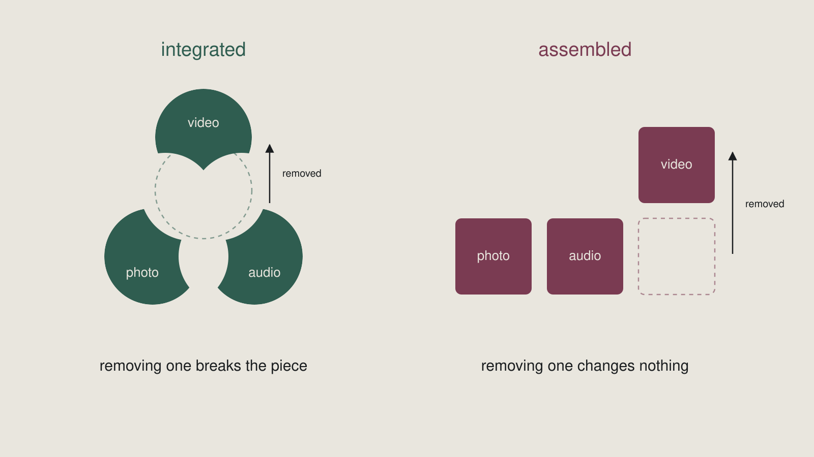

Week 11 slidesIntegration
What was on screen in class. Arrow keys or click to move.
1 / 16
Title
Week 11 — Integration
Module summative · 15% of your course grade
2 / 16
Watch this
Shown in class.
3 / 16
Now watch it again
Shown in class.
4 / 16
Nothing broke.
The picture had already said it.
5 / 16
The removal test
Delete one medium.
If nothing breaks, they were assembled — not integrated.
6 / 16
Outcomes
By the end of this week you can
- Apply the removal test to your own work
- Produce a piece where photography, audio, and video are interdependent
- Diagnose why a piece reads as assembled rather than integrated
7 / 16
Two states
Integrated — removing one breaks it.
Assembled — removing one changes nothing.

8 / 16
Three jobs
Photograph — holds a moment still long enough to examine
Audio — carries interiority, and works while the eye is busy
Video — carries change over time, and cause
9 / 16
The default failure
Two media saying the same thing.
Both present. Neither necessary.
10 / 16
Two columns
| Saying the same thing | Doing different jobs |
|---|---|
| "the workshop was freezing" over someone in a coat | "thirty years" over hands that have |
| A photograph of the person speaking | A photograph of what they will not talk about |
| Video of the thing just described | Video of what happened next |
11 / 16
The decorative third
A still behind the video is not a medium.
Photography is the usual casualty.
12 / 16
Diagnosis is the harder half
Detecting is the test.
Diagnosing is the outcome.
Which two are duplicating each other? Which one was added to satisfy a requirement?
13 / 16
Say this before anyone builds
A correctly diagnosed failure
outranks an untested claim.
14 / 16
The fix is subtraction
Your audio is removable.
Do not add audio.
Take the duplication out of the video instead.
15 / 16
Your partner deletes without sentiment
You are lenient with your own work.
Swap. They will not be.
16 / 16
This is week 15's dry run
Outcome 15.1
"...integrate three media into a landing page that passes the removal test."
The same sentence. Full scale. Whole grade attached.